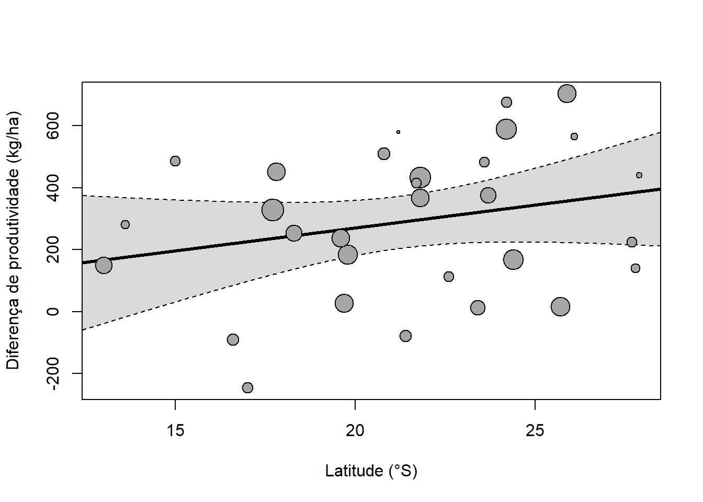
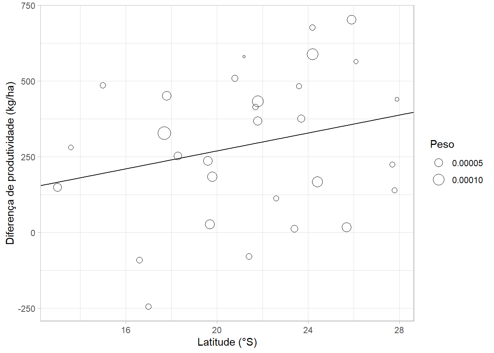

m_reg <-rma(yi, vi, mods =~ latitude, data = dat)m_reg
Mixed-Effects Model (k = 30; tau^2 estimator: REML)
tau^2 (estimated amount of residual heterogeneity): 24338.9085 (SE = 13847.8759)
tau (square root of estimated tau^2 value): 156.0093
I^2 (residual heterogeneity / unaccounted variability): 49.94%
H^2 (unaccounted variability / sampling variability): 2.00
R^2 (amount of heterogeneity accounted for): 3.82%
Test for Residual Heterogeneity:
QE(df = 28) = 54.5882, p-val = 0.0019
Test of Moderators (coefficient 2):
QM(df = 1) = 1.6462, p-val = 0.1995
Model Results:
estimate se zval pval ci.lb ci.ub
intrcpt -26.1999 248.8785 -0.1053 0.9162 -513.9928 461.5931
latitude 14.7919 11.5288 1.2830 0.1995 -7.8041 37.3879
---
Signif. codes: 0 '***' 0.001 '**' 0.01 '*' 0.05 '.' 0.1 ' ' 1
regplot(m_reg, xlab ="Latitude (°S)",ylab ="Diferença de produtividade (kg/ha)")

A mesma figura com ggplot2 (tamanho do ponto ∝ peso):
dat |>as_tibble() |>ggplot(aes(latitude, yi, size =1/ vi)) +geom_point(shape =1) +geom_abline(intercept =coef(m_reg)[1], slope =coef(m_reg)[2]) +labs(x ="Latitude (°S)", y ="Diferença de produtividade (kg/ha)",size ="Peso")

Exercício 9.1
Ajuste modelos com regiao, latitude + pressao e ano. Quanto da heterogeneidade (\(R^2\)) cada um explica? Qual faz mais sentido agronômico?
Ver solução
tibble(modelo =c("regiao", "latitude", "latitude + pressao", "ano"),R2 =c(rma(yi, vi, mods =~ regiao, data = dat)$R2, m_reg$R2,rma(yi, vi, mods =~ latitude + pressao, data = dat)$R2,rma(yi, vi, mods =~ ano, data = dat)$R2))
# A tibble: 4 × 2
modelo R2
<chr> <dbl>
1 regiao 9.62
2 latitude 3.82
3 latitude + pressao 100
4 ano 0
Ngugi, H. K., P. D. Esker, e H. Scherm. 2011. «Meta-analysis to determine the effects of plant disease management measures: review and case studies on soybean and apple». Phytopathology 101 (1): 31–41. https://doi.org/10.1094/PHYTO-03-10-0068.
Paul, P. A., P. E. Lipps, e L. V. Madden. 2005. «Relationship between visual estimates of Fusarium head blight intensity and deoxynivalenol accumulation in harvested wheat grain: a meta-analysis». Phytopathology 95: 1225–36.
Paul, P. A., L. V. Madden, C. A. Bradley, A. E. Robertson, G. P. Munkvold, G. Shaner, K. A. Wise, et al. 2011. «Meta-analysis of yield response of hybrid field corn to foliar fungicides in the U.S. Corn Belt». Phytopathology 101: 1122–32.
Código fonte
---title: "9. Subgrupos e meta-regressão"---```{r}#| include: falsesource("R/setup.R")fungicida <-read_csv("dados/fungicida_soja.csv") |>mutate(sd = cv /100* media_geral)dat <-escalc(measure ="MD",m1i = prod_trat, sd1i = sd, n1i = n,m2i = prod_ctrl, sd2i = sd, n2i = n,data = fungicida, slab = estudo)```::: {.callout-note}## Objetivos- Explicar heterogeneidade com moderadoras categóricas (subgrupos) e contínuas (meta-regressão).- Visualizar o efeito de moderadoras.:::## Quando há heterogeneidadePodemos tentar explicá-la com características dos estudos (moderadoras),em um **modelo de efeitos mistos**:- **Análise de subgrupos**: moderadora categórica (região, cultivar, pressão de doença).- **Meta-regressão**: moderadora contínua (latitude, ano, severidade na testemunha).Exemplos em fitopatologia: @ngugi2011, @paul2005, @paul2011.## SubgruposNos ensaios de fungicida, a resposta difere entre regiões ou entre níveisde pressão de doença?```{r}m_sub <-rma(yi, vi, mods =~ pressao, data = dat)m_sub```O teste `QM` (*Test of Moderators*) indica se a moderadora explica parte daheterogeneidade. Para obter a média de cada grupo, retire o intercepto:```{r}rma(yi, vi, mods =~ pressao -1, data = dat)```## Meta-regressão```{r}m_reg <-rma(yi, vi, mods =~ latitude, data = dat)m_reg``````{r}regplot(m_reg, xlab ="Latitude (°S)",ylab ="Diferença de produtividade (kg/ha)")```A mesma figura com `ggplot2` (tamanho do ponto ∝ peso):```{r}dat |>as_tibble() |>ggplot(aes(latitude, yi, size =1/ vi)) +geom_point(shape =1) +geom_abline(intercept =coef(m_reg)[1], slope =coef(m_reg)[2]) +labs(x ="Latitude (°S)", y ="Diferença de produtividade (kg/ha)",size ="Peso")```::: {.callout-important}## Exercício 9.1Ajuste modelos com `regiao`, `latitude + pressao` e `ano`. Quanto daheterogeneidade ($R^2$) cada um explica? Qual faz mais sentido agronômico?:::```{r}#| code-fold: true#| code-summary: "Ver solução"tibble(modelo =c("regiao", "latitude", "latitude + pressao", "ano"),R2 =c(rma(yi, vi, mods =~ regiao, data = dat)$R2, m_reg$R2,rma(yi, vi, mods =~ latitude + pressao, data = dat)$R2,rma(yi, vi, mods =~ ano, data = dat)$R2))```